[1] "sf" "tbl_df" "tbl" "data.frame"Spatial Data Analysis
Lecture 1 - Spatial data basics
Sant’Anna School of Advanced Studies
Matteo Coronese
m.coronese@santannapisa.it
June 2026
Why are spatial data becoming essential in social science?
Many economic and social processes are inherently spatial:
- climate exposure differs across locations;
- labor markets are geographically connected;
- pollution crosses administrative borders;
- housing prices diffuse across neighborhoods;
- accessibility shapes opportunities;
- policies affect nearby areas differently.
Spatial data allow us to measure these mechanisms explicitly.
And here is the good news: spatial data are often among the most challenging data to manipulate (don’t worry!). Once you learn how to work with them, handling most other types of data will feel much easier.
Spatial data change how we measure phenomena
Without spatial information, we often observe only administrative-level information. But every unit is considered as indipendent.
In many applications… geography matters!
Spatial data allow us to measure:
- exposure;
- proximity;
- accessibility;
- segregation;
- spillovers;
- neighborhood effects;
Spatial methods transform location into measurable information.
What will we learn in this course?
Lecture 1 Spatial data basics
- spatial data types (vector and raster);
- coordinate reference systems (CRS);
- spatial data structures in R;
- basic visualization and manipulation with
sfandterra.
Lecture 2 — Operating with spatial datasets
Lecture 3 — Elements of spatial dependence and econometrics
Lecture 4 — Applied spatial workflows
We are going to use R software \(\rightarrow\) handling of spatial data & statistics/econometrics. Further information on R for geocomputation can be found at https://r.geocompx.org/
How is spatial information represented?
Spatial information is typically represented in two ways:
Vector data
Handled withsfpackage.- points, lines, polygons
- cities, roads, administrative boundaries
Raster data
Handled withterrapackage.- regular grids of cells
- temperature, elevation, pollution, satellite imagery
Points live in a space: the CRS
Basic element of vector data: points. They can represent:
- self-standing features (e.g. bus stops);
- or be combined into lines and polygons.
A point is identified by coordinates within a coordinate reference system (CRS).
Coordinates only make sense once a reference system is specified.
- For example, in a CRS London \(\rightarrow\) c(-0.1, 51.5)
- its location is 0.1° West and 51.5° North (w.r.t. Greenwich Prime Meridian and Equator).
- In another CRS (British National Grid) London \(\rightarrow\) c(530000, 180000)
- 530 km East and 180 km North w.r.t another origin.
- For example, in a CRS London \(\rightarrow\) c(-0.1, 51.5)
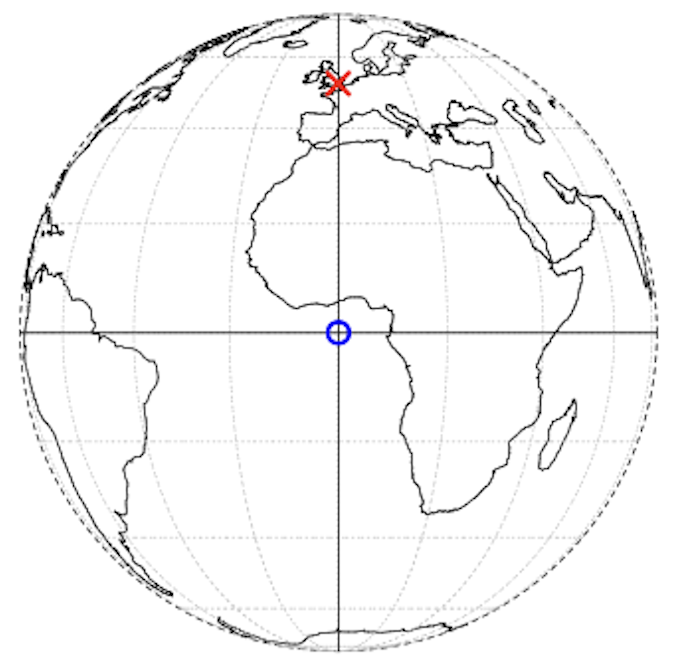
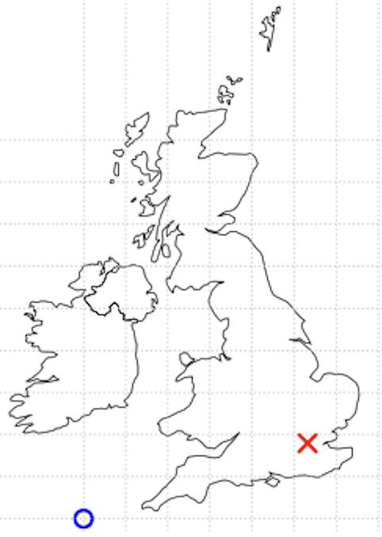
sf objects behave like ordinary data frames
An sf object is also a data frame. This means that standard data manipulation functions can be applied directly to spatial data. The geometry column is preserved automatically.
Selecting variables:
[1] 4Creating new variables:
[1] 45.920547 56.001184 NA 3.540773 33.501326 6.333145Because sf objects are data frames, they work amazingly well with dplyr and tidyverse. More on this next lecture.
Basic structure of an sf object
An sf object stores:
- ordinary attributes (e.g. iso_a2, name_long);
- a geometry column (type MULTIPOLYGON);
- coordinate reference system information (WGS84).
Simple feature collection with 8 features and 3 fields
Geometry type: MULTIPOLYGON
Dimension: XY
Bounding box: xmin: -180 ymin: -18.28799 xmax: 180 ymax: 83.23324
Geodetic CRS: WGS 84
name_long continent subregion geom
1 Fiji Oceania Melanesia MULTIPOLYGON (((-180 -16.55...
2 Tanzania Africa Eastern Africa MULTIPOLYGON (((33.90371 -0...
3 Western Sahara Africa Northern Africa MULTIPOLYGON (((-8.66559 27...
4 Canada North America Northern America MULTIPOLYGON (((-132.71 54....
5 United States North America Northern America MULTIPOLYGON (((-171.7317 6...
6 Kazakhstan Asia Central Asia MULTIPOLYGON (((87.35997 49...
7 Uzbekistan Asia Central Asia MULTIPOLYGON (((55.96819 41...
8 Papua New Guinea Oceania Melanesia MULTIPOLYGON (((141.0002 -2...Basic maps with sf
The default plotting methods make spatial exploration immediate.
using ggplot you can create much nicer maps!
But let’s take a step back…
Geometry types
Geometries are the basic building blocks of simple features (hence the name sf).
Vector geometries are built from a few basic elements:
POINTLINESTRINGPOLYGON
And their multi-part versions:
MULTIPOINTMULTILINESTRINGMULTIPOLYGON

Creating geometries
- A point is given by coordinate in two dimensions
- A linestring is a sequence of points with a straight line connecting them
- A polygon is a sequence of points that form a closed, non-intersecting ring.
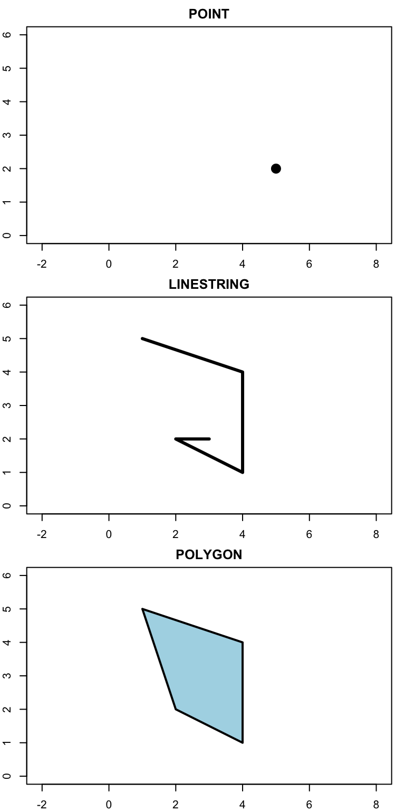
Creating geometries II
- Simple feature standard also allows multiple geometries of a single type to exist within a single feature within “multi” version of each geometry type.
- Use rbind for points, a list of rbinds of lines, and a list of a list of rbinds for polygons.
multipoint <- st_multipoint(
rbind(
c(5, 2),
c(1, 3),
c(3, 4),
c(3, 2)
)
)
multilinestring <- st_multilinestring(
list(
rbind(
c(1, 5),
c(4, 4),
c(4, 1),
c(2, 2),
c(3, 2)
),
rbind(
c(1, 2),
c(2, 4)
)
)
)
multipolygon <- st_multipolygon(
list(
list(
rbind(
c(1, 5),
c(2, 2),
c(4, 1),
c(4, 4),
c(1, 5)
)
),
list(
rbind(
c(0, 2),
c(1, 2),
c(1, 3),
c(0, 3),
c(0, 2)
)
)
)
)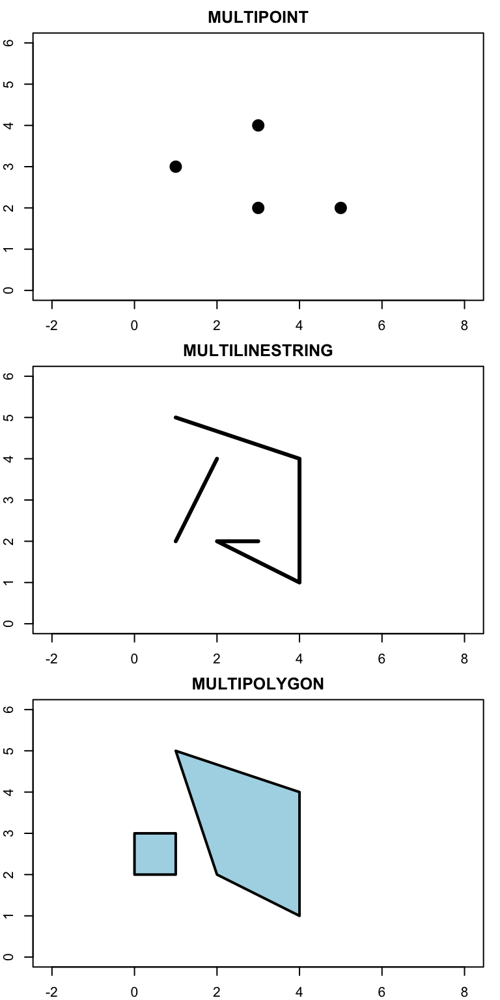
Creating geometries III
- Finally, a geometry collection can contain any combination of geometries including (multi)points and linestrings
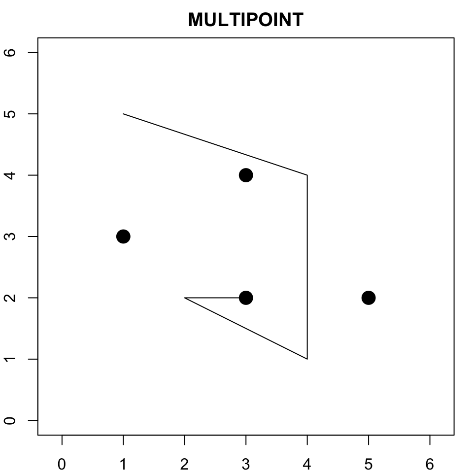
From simple feature geometries to simple feature columns
One sfg object contains only a single simple feature geometry. A simple feature geometry column (sfc) is a list of sfg objects
In most cases, an sfc object contains objects of the same geometry type (e.g. point).
Geometry set for 2 features
Geometry type: POINT
Dimension: XY
Bounding box: xmin: 1 ymin: 2 xmax: 5 ymax: 3
CRS: NAIt is also possible to create an sfc object from sfg objects with different geometry types.
Geometry set for 2 features
Geometry type: GEOMETRY
Dimension: XY
Bounding box: xmin: 1 ymin: 1 xmax: 5 ymax: 5
CRS: NA[1] POINT MULTILINESTRING
18 Levels: GEOMETRY POINT LINESTRING POLYGON MULTIPOINT MULTILINESTRING MULTIPOLYGON ... TRIANGLECRS in sfc
sfc objects can additionally store information on the CRS. The default value is NA (Not Available), as can be verified with st_crs():
All geometries in sfc objects must have the same CRS. A CRS can be specified with the crs argument of st_sfc() (or st_sf()), which takes a CRS identifier provided as a text string.
GEOGCRS["WGS 84",
ENSEMBLE["World Geodetic System 1984 ensemble",
MEMBER["World Geodetic System 1984 (Transit)"],
MEMBER["World Geodetic System 1984 (G730)"],
MEMBER["World Geodetic System 1984 (G873)"],
MEMBER["World Geodetic System 1984 (G1150)"],
MEMBER["World Geodetic System 1984 (G1674)"],
MEMBER["World Geodetic System 1984 (G1762)"],
MEMBER["World Geodetic System 1984 (G2139)"],
MEMBER["World Geodetic System 1984 (G2296)"],
ELLIPSOID["WGS 84",6378137,298.257223563,
LENGTHUNIT["metre",1]],
ENSEMBLEACCURACY[2.0]],
PRIMEM["Greenwich",0,
ANGLEUNIT["degree",0.0174532925199433]],
CFrom sfc to spatial objects (sf, or simple features)
An sf object combines:
- a table of attributes;
- a geometry column
sfc.
#| class: small-code
rome_point <- st_point(c(12.4964, 41.9028)) # sfg object
rome_geom <- st_sfc(
rome_point,
crs = "EPSG:4326"
) # sfc object
rome_attrib <- data.frame(
name = "Rome",
temperature = 30,
date = as.Date("2023-06-21")
) # data.frame object
rome_sf <- st_sf(
rome_attrib,
geometry = rome_geom
)
rome_sfMore on Coordinate Reference Systems (CRSs)
A Coordinate Reference System (CRS) defines:
- how coordinates are measured;
- the reference model of the Earth (datum);
- the coordinate units;
- how coordinates relate to physical locations.
Problem: The Earth is approximately spherical, while most maps are flat…
Two broad classes of CRS are commonly used:
- Geographic CRS \(\rightarrow\) Spherical Earth
- longitude / latitude
- angular units (degrees)
- different datums and reference points
- Projected CRS \(\rightarrow\) Flat representation of Earth
- planar coordinates
- linear units (usually meters, but you can check with
st_crs(sf_object)$ud_unit) - Different ways of representing the Earth’s surface on a plane
Geographic coordinates: WGS84
Which CRS should we use?
There is no universally “correct” CRS: the choice depends on the application. Anyway, most of the time the answer is WGS84 (EPSG:4326). Used by GPS systems; online maps; global spatial datasets.
Geographic CRS are not planar coordinates
Longitude and latitude are angles, not distances.
A simple plot treats coordinates as if they were Cartesian
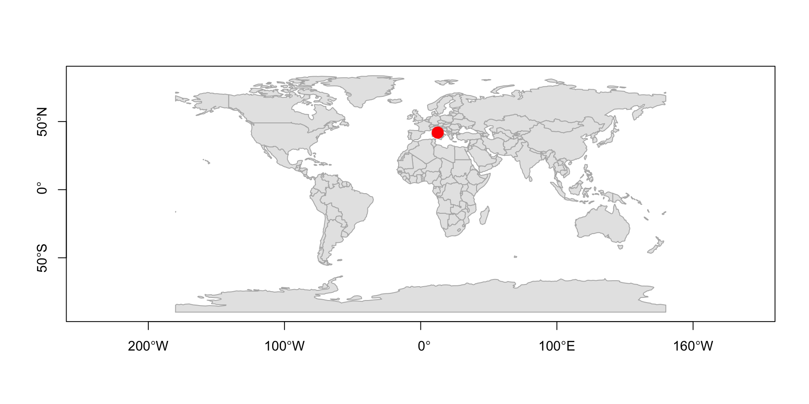
Bear in mind that degrees of longitude do not correspond to constant distances on Earth –> meridians converge toward the poles.
- 1° longitude at the Equator ≈ 111 km
- 1° longitude close to London ≈ 69 km
- 1° longitude close to North Pole ≈ 0 km
- Degrees of latitude are instead approximately constant in distance (1° ≈ 111 km)Transforming coordinates with st_transform()
Spatial objects can be easily reprojected into another CRS. From geographic (WGS84) to projected (Web Mercator, the one used by Google Maps to display).
Simple feature collection with 1 feature and 3 fields
Geometry type: POINT
Dimension: XY
Bounding box: xmin: 1391093 ymin: 5146430 xmax: 1391093 ymax: 5146430
Projected CRS: WGS 84 / Pseudo-Mercator
name temperature date geometry
1 Rome 30 2023-06-21 POINT (1391093 5146430)1 [m]- The same location now has different coordinates because it is represented in a projected CRS.
- The reference origin, in the specific case of Web Mercator, is still Equator-Greenwich.
- Projected CRS usually use planar coordinates measured in meters. But these are “projected meters”, not exact physical distances on the Earth’s surface….
Every projection distorts the Earth
“All happy families are alike; each unhappy family is unhappy in its own way.”
- Lev Tolstoj, Anna Karenina.
“Each projection is in distorted in its own way”.
- Me, in this lecture
Why is Antarctica so big?
No flat map can preserve all geographic properties simultaneously.
Different projections preserve different properties: shape; area; distance; direction.
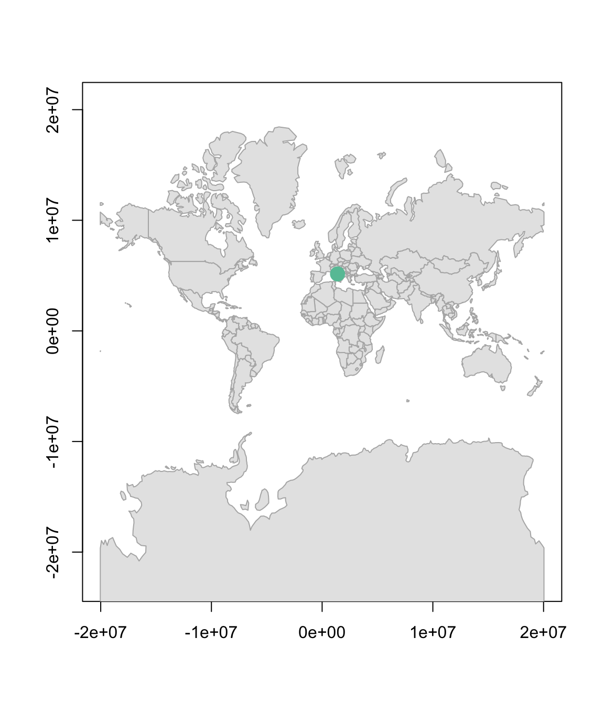
Geometry operations in sf
Modern versions of sf can use two different geometry engines.
This can affect the outcome of spatial operations.
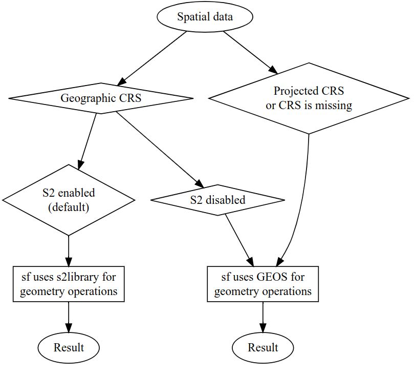
- Geographic CRS (
EPSG:4326) can use the spherical geometry engineS2; - Projected CRS typically use planar geometry (
GEOS); - Spatial operations therefore depend on both:
- the CRS;
- the geometry engine.
Why projections still matter
With S2 enabled (default), many operations on geographic CRS work well directly on the sphere.
With S2 disabled, some geometry operations (often involving distances, areas, buffers) may become problematic because longitude and latitude are treated as planar coordinates.
Generally, projected CRS are often more convenient for:
- local analysis (for small enough regions, the Earth is approximately flat)
- planar geometry operations;
- distances and buffers;
- spatial algorithms based on Euclidean geometry.
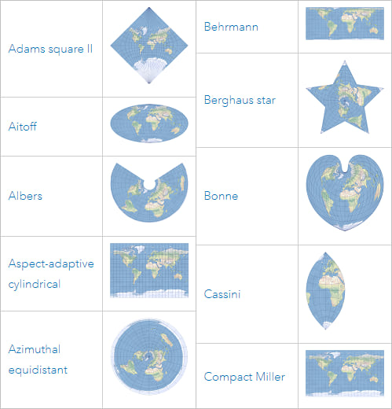
Buffers under different CRS assumptions
italy <- world[world$name_long == "Italy", ]
# S2 ON
sf_use_s2(TRUE)
rome_buffer_s2 <- st_buffer(
rome_sf,
dist = 100000
)
# S2 OFF
sf_use_s2(FALSE)
rome_buffer_deg <- st_buffer(
rome_sf,
dist = 1 #1 degree!!! using 100000 would be SUPER WRONG!
)
# Back ON
sf_use_s2(TRUE) #useless
# Projected
rome_3857 <- st_transform(rome_sf, 3857)
italy_3857 <- st_transform(italy, 3857)
rome_buffer_proj <- st_buffer(
rome_3857,
dist = 100000
)- Why the first one is a circle? Correct km…
- Why the second one is an ellipsoid? It is a cirle in the lon-lat space, but lon-lat are not equal in terms of km…
- Why the third one si smaller? If you’d use a projection specific for Rome, first and third would look much more similar…
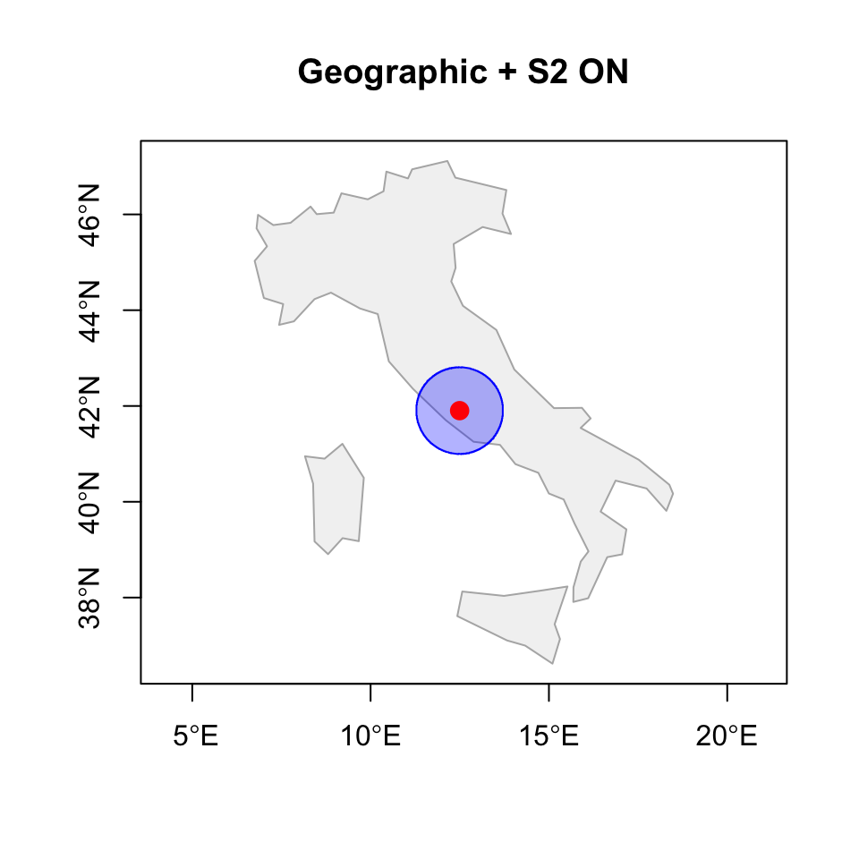

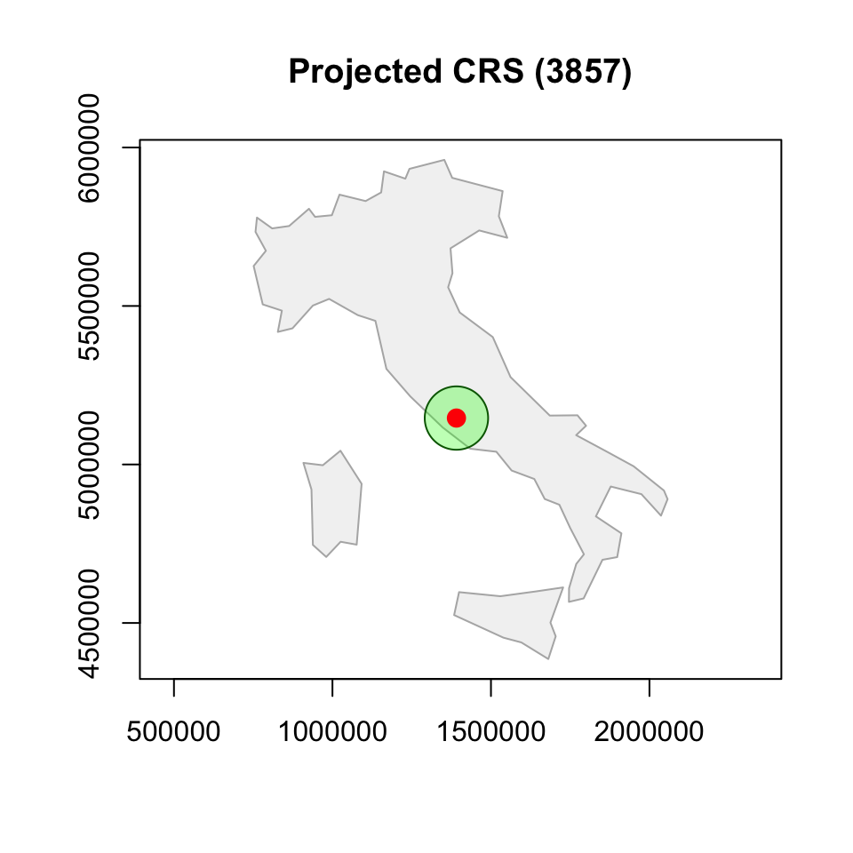
Circular on Earth or circular in coordinates?

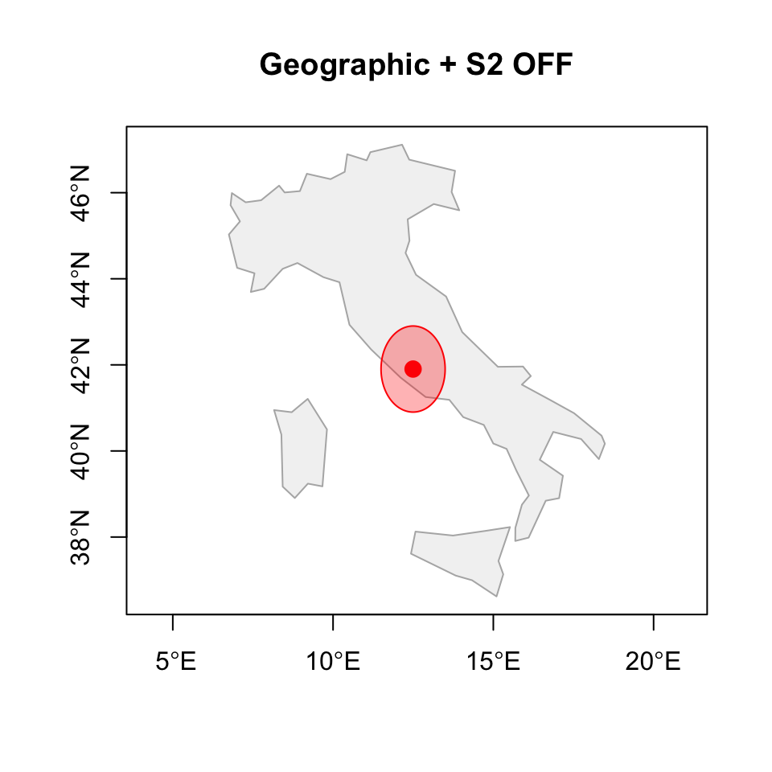

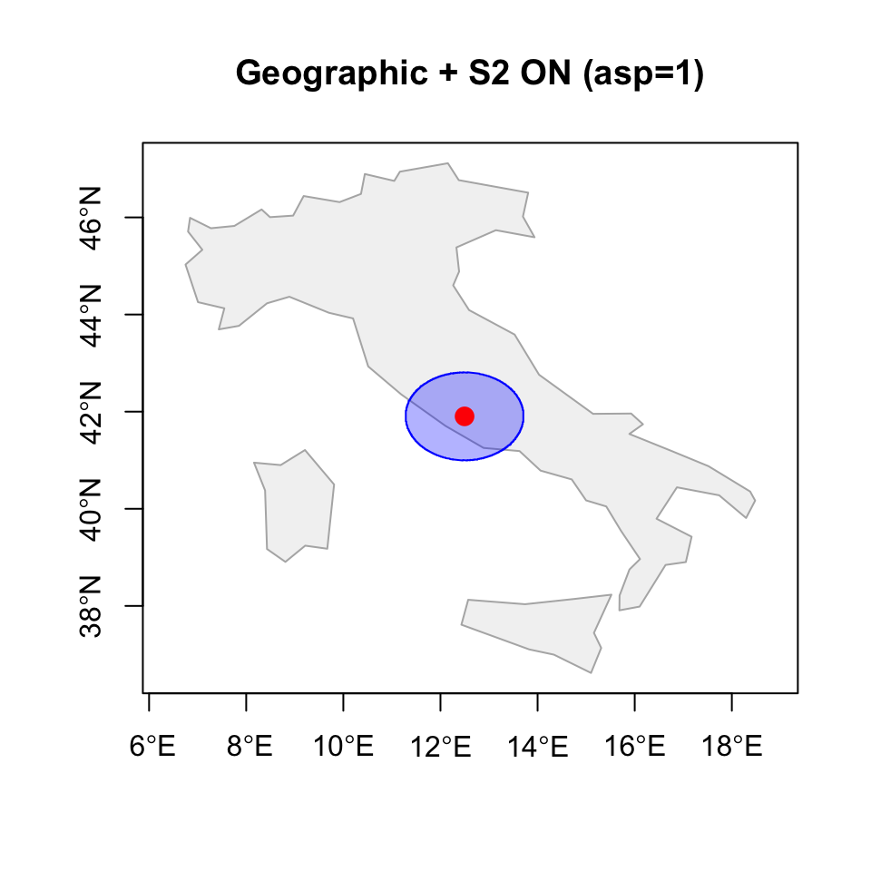
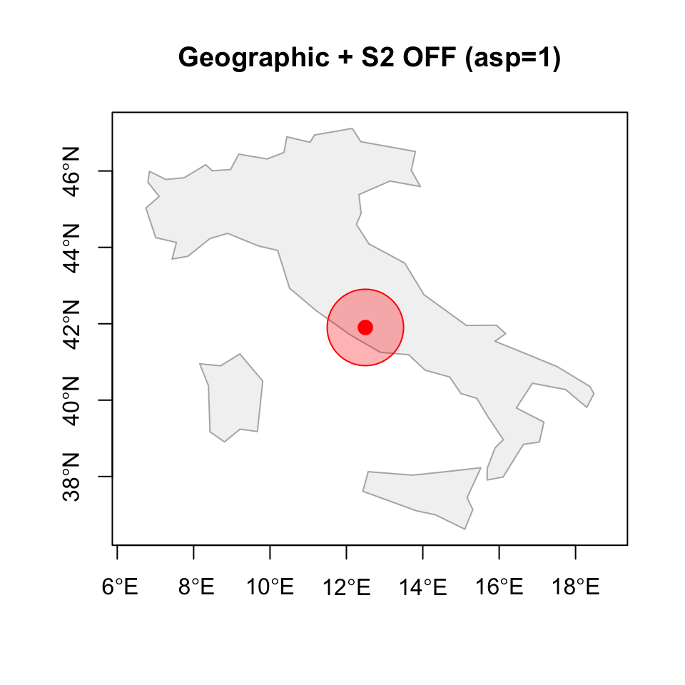
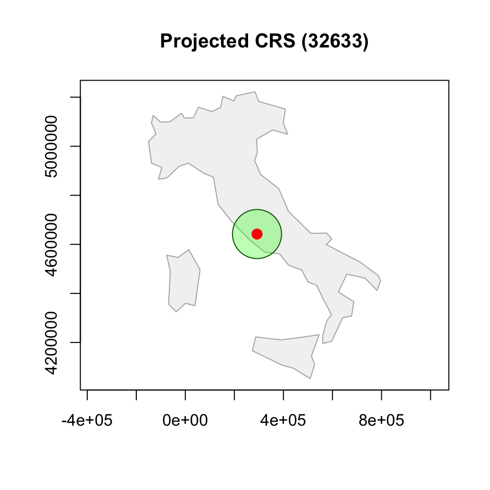
A common and safe workflow
With S2 enabled, many geometry operations work well directly on geographic CRS. However, for local or regional analysis, it is often convenient to:
- start from a geographic CRS (
EPSG:4326); - project the data into a suitable local projected CRS;
- perform geometry operations;
- optionally transform back to WGS84.
rome_32633 <- st_transform(rome_sf, 32633)
# UTM (Universal Transverse Mercator) Zone 33N
# A local projected CRS covering much of Italy.
# Distances are expressed in meters and distortions are very small
# around Rome.
rome_buffer_32633 <- st_buffer(
rome_32633,
dist = 100000
)
rome_buffer_wgs84 <- st_transform(
rome_buffer_32633,
4326
)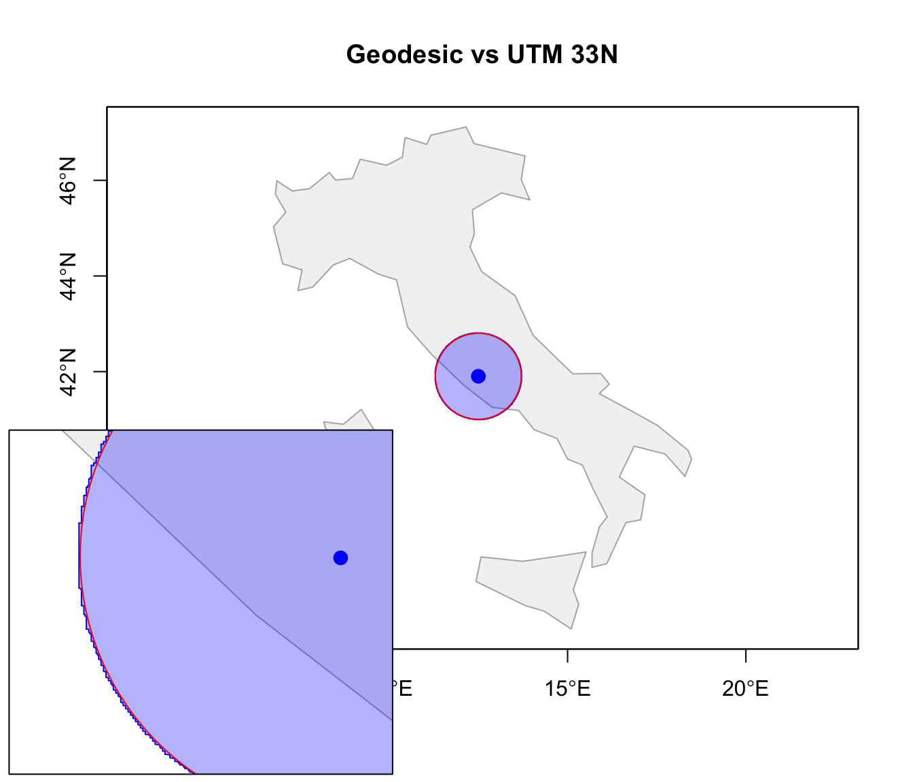
This workflow is especially useful when:
- distances or areas are important;
- the study region is relatively small;
- planar geometry algorithms or GIS libraries assuming Euclidean geometry are used.
Raster data
Raster data divide space into a regular grid of cells.
Raster objects can contain:
- a single layer;
- multiple layers (e.g. temperature over time).
Each cell of one raster layer can only hold a single value.
The value might be continuous
- elevation; pollution;
- temperature; precipitation;
- remote sensing variables;
or categorical
- land cover; soil types.
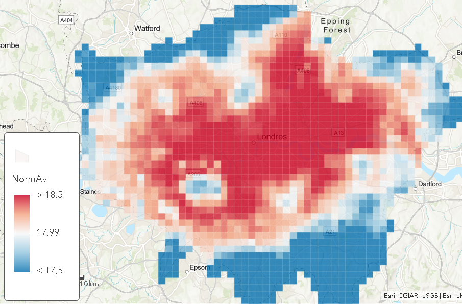
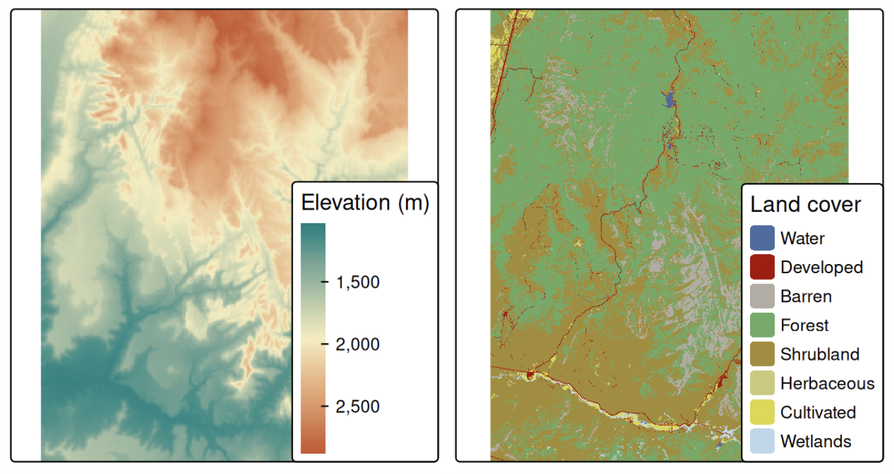
Raster structure
Rasters are fundamentally a matrix of values + spatial metadata.
Unlike vector data, rasters are NOT stored as many polygons: once you know the coordinates of origin (in terra, the upper left corner of the matrix) and the resolution (the amount of space covered by each cell), cell locations are reconstructed.
Inspecting a raster object
class : SpatRaster
dimensions : 90, 95, 1 (nrow, ncol, nlyr)
resolution : 0.008333333, 0.008333333 (x, y)
extent : 5.741667, 6.533333, 49.44167, 50.19167 (xmin, xmax, ymin, ymax)
coord. ref. : lon/lat WGS 84 (EPSG:4326)
source : elev.tif
name : elevation
min value : 141
max value : 547 A SpatRaster object stores:
- the raster dimensions (
nrow,ncol,nlyr); - the spatial resolution (cell size) in degrees (because of geographic CRS)
- the spatial extent (
xmin,xmax,ymin,ymax); in degrees (because of geographic CRS) - the coordinate reference system (CRS);
- the raster values (in the header min and max are shown)
- Raster grids are regular in the coordinate system \(\rightarrow\) NOT equal physical distances on the Earth’s surface.
- In WGS84, as you go further away from the equator, cells become physically narrower east-west toward the poles \(\rightarrow\) cover smaller physical areas.
Plotting and inspecting rasters
Useful inspection functions include:
Raster matrices are indexed consistently with geographic orientation: columns increase eastward, rows increase southward
Simple math operations are applied cell-by-cell.
Multi-layer rasters
Raster objects can contain multiple aligned layers, each with the same geometry. Each layer stores one value per cell.
class : SpatRaster
dimensions : 90, 95, 3 (nrow, ncol, nlyr)
resolution : 0.008333333, 0.008333333 (x, y)
extent : 5.741667, 6.533333, 49.44167, 50.19167 (xmin, xmax, ymin, ymax)
coord. ref. : lon/lat WGS 84 (EPSG:4326)
sources : elev.tif
memory
memory
varnames : elev
elev
elev
names : elevation, elevation, elevation
min values : 141, 282, 423
max values : 547, 1094, 1641 elevation
1 NA elevation elevation elevation
[1,] NA NA NA
[2,] NA NA NA
[3,] NA NA NA
[4,] NA NA NA
[5,] NA NA NA mean
elevation 348.3366
elevation.1 696.6732
elevation.2 1045.0098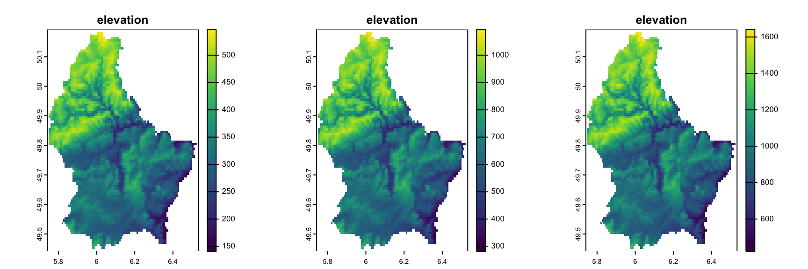
Reprojecting a raster object
class : SpatRaster
dimensions : 108, 74, 1 (nrow, ncol, nlyr)
resolution : 1196.351, 1196.351 (x, y)
extent : 639159.4, 727689.4, 6350330, 6479536 (xmin, xmax, ymin, ymax)
coord. ref. : WGS 84 / Pseudo-Mercator (EPSG:3857)
source(s) : memory
name : elevation
min value : 144.5029
max value : 544.1359 After reprojection:
- raster cells become regular in projected coordinates (not meters, projected meters!);
- spatial resolution is now expressed in projected meters;
- New values! Raster values must be resampled onto a new grid.
- Before dimensions were 90X95. Now they are 108X74 (more rectangular). Why?
- Vector data: same geometries, same attributes, just different coordinates
- Raster data: brand new grid + resampled values (nearest neighbor; bilinear; cubic interpolations)
Raster reprojection is often more invasive than vector reprojection. For this reason, raster datasets are frequently analyzed in their native CRS unless reprojection is necessary for the analysis.
Reprojecting a raster object II
Even visually, you can spot some differences.
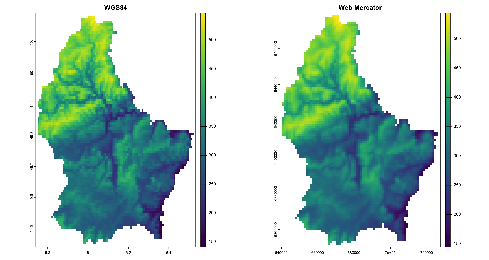
Common spatial file formats
Vector data
- Shapefile (
.shp) - GeoPackage (
.gpkg) - GeoJSON (
.geojson) - CSV with coordinates
Imported in R with:
Spatial files usually also store CRS information. Otherwise, you should know in which CRS the coordinates were originally recorded (e.g. longitude-latitude values in a CSV file), and explicitly assign the CRS. In sf:
In terra:
Better maps with ggplot
Spatial analysis is also about communicating spatial patterns effectively.
While plot is useful for exploration, ggplot makes much better graphs.
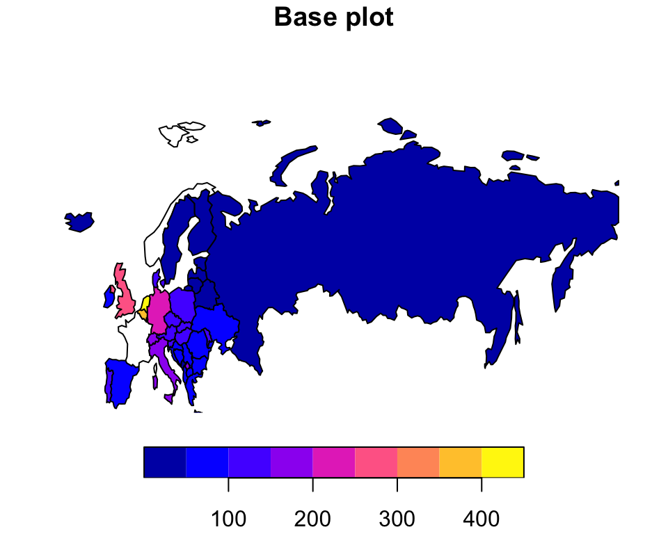
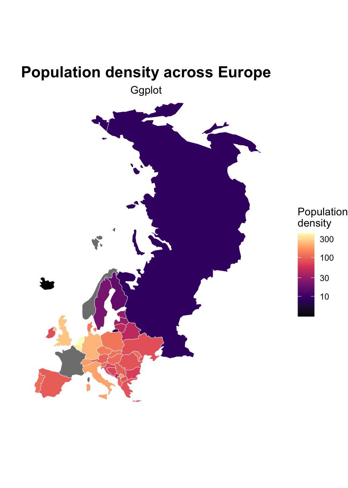
It allows:
- better, more variegated aesthetics;
- layering of multiple spatial objects;
- legends and scales;
- faceting;
- integration with the
tidyverseecosystem; - publication-quality figures.
A first map
ggplot builds figures by adding layers. For spatial data, the most important layer is geom_sf(), which automatically plots sf objects and handles
- geometries;
- coordinate reference systems;
- map extents.
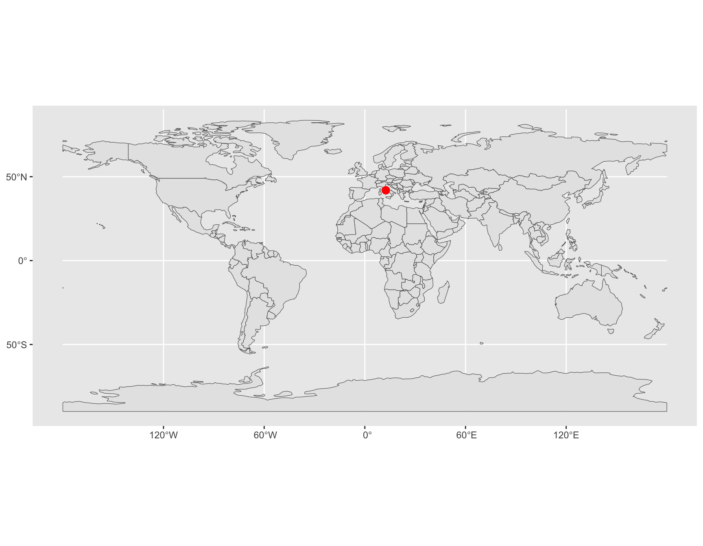
Layers, vectors and rasters
#install packages rnaturalearth, geodata, maps, tidyterra
countries <- rnaturalearth::ne_countries(
scale = "medium",
returnclass = "sf"
)
eu <- countries %>%
filter(region_un%in%c("Europe", "Asia", "Africa"))
tavg <- geodata::worldclim_global(
var = "tavg",
res = 10,
path = tempdir()
)
temp <- mean(tavg)
temp_eu <- crop(
temp,
ext(-15, 40, 35, 72)
)
names(temp_eu)
data("world.cities", package = "maps")
cities <- st_as_sf(
subset(world.cities, pop > 1500000),
coords = c("long", "lat"),
crs = 4326
)
cities_lab <- cbind(
st_drop_geometry(cities),
st_coordinates(cities)
)
ggplot() +
tidyterra::geom_spatraster(
data = temp_eu,
aes(
fill = mean
),
alpha = 0.85
) +
geom_sf(
data = eu,
fill = NA,
color = "black",
linewidth = 0.2
) +
geom_sf(
data = cities,
aes(size=pop),
color = "darkgreen",
show.legend = FALSE
) +
geom_text(
data = cities_lab,
aes(
X,
Y,
label = name
),
size = 3,
nudge_y = 1
) +
coord_sf(
xlim = c(-15, 40),
ylim = c(35, 72),
expand = FALSE
) +
labs(
title = "Mean annual temperature and major European cities (1970-2000)"
) +
scale_fill_gradient2(
low = "#2166AC",
mid = "#F7F7F7",
high = "#B2182B",
midpoint = 10,
na.value = "aliceblue",
name = "Temperature (°C)"
) +
theme_void() +
theme(
plot.title = element_text(
face = "bold",
size = 18,
hjust = 0.5
),
legend.position = "bottom"
)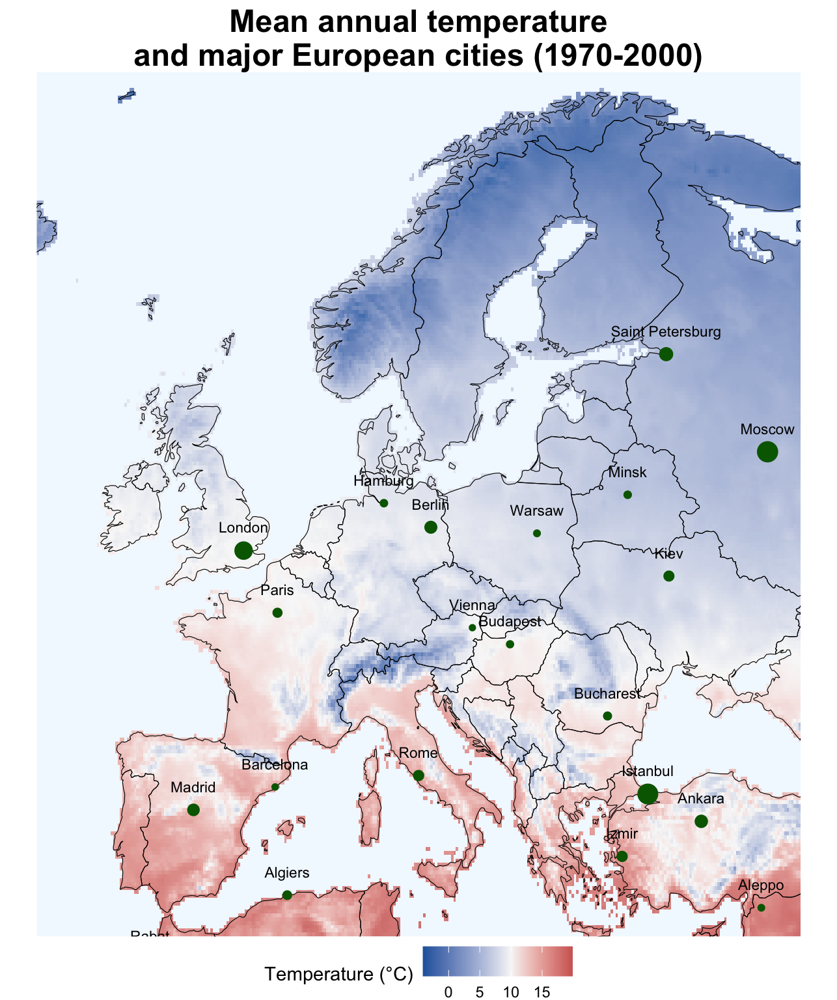